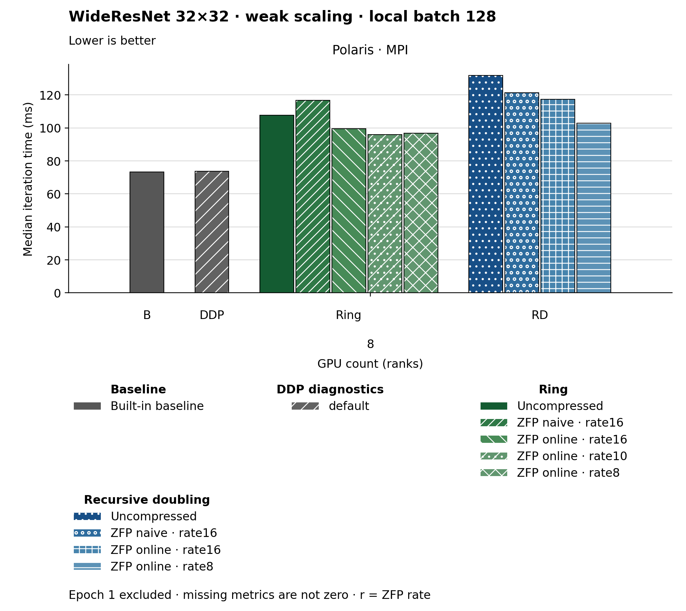

The figure uses bars. Families and methods are identified by text and patterns in addition to color. The metric is Median iteration time (ms). Polaris · MPI, GPU count (ranks) 8: Built-in baseline has the lowest plotted value, 73.350. Epoch 1 is excluded. Values are medians; when repeated runs are available the selected repeat policy is median. These are not confidence intervals across repeated jobs. Missing or unrecorded metrics are omitted, not set to zero.
| Panel | GPU count (ranks) | Method | Value | Runs |
|---|---|---|---|---|
| Polaris · MPI | 8 | none | 73.35 | 1 |
| Polaris · MPI | 8 | ring | 107.775 | 1 |
| Polaris · MPI | 8 | ring_zfp_naive:16 | 116.76249999999999 | 2 |
| Polaris · MPI | 8 | ring_zfp_online_coll:16 | 99.4775 | 2 |
| Polaris · MPI | 8 | ring_zfp_online_coll:8 | 96.7225 | 2 |
| Polaris · MPI | 8 | recursive_doubling | 131.84 | 2 |
| Polaris · MPI | 8 | recursive_doubling_zfp_naive:16 | 121.33500000000001 | 2 |
| Polaris · MPI | 8 | recursive_doubling_zfp_online_coll:16 | 117.305 | 1 |
| Polaris · MPI | 8 | recursive_doubling_zfp_online_coll:8 | 102.84 | 1 |
| Polaris · MPI | 8 | default | 73.805 | 1 |
| Polaris · MPI | 8 | ring_zfp_online_coll:10 | 95.855 | 1 |